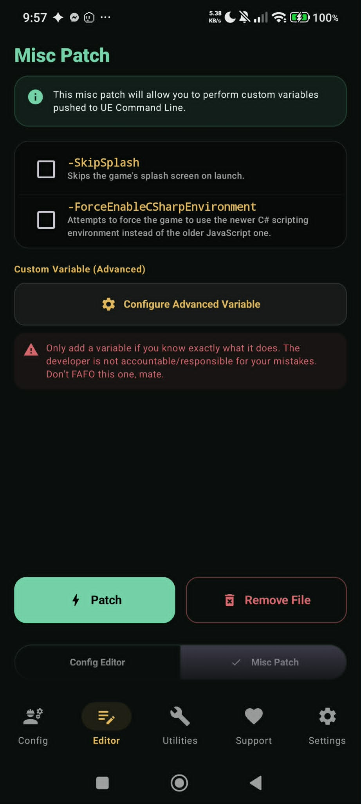

Enable C# Environment
WuWa Mobile Config Patcher includes support for checking, enabling, and managing the experimental C# (C-Sharp) runtime environment for Wuthering Waves on Android.
📸 Visual Reference

🔍 What is the C# Environment?
The C# runtime option enables the engine's alternate scripting pipeline. When paired with compatible graphics drivers and Vulkan rendering, it can offer substantial frame pacing improvements, reduced CPU overhead, and smoother asset streaming on supported hardware.
Recommended RAM: 8 GB or higher. Devices with under 8 GB RAM may experience memory pressure or force-closing during intensive combat scenes or map loading.
🚀 How to Enable via Config Patcher
- Open WuWa Config Patcher.
- Navigate to the Config Editor tab or Utilities.
- Tap Check C# Status / Get Device Info to verify your device's architecture and RAM capabilities.
- Under Misc Patching, toggle Enable C# Environment.
- Apply the patch and launch the game.
When testing the C# environment for the first time, it is recommended to run without heavy custom visual overrides to evaluate baseline stability before layering additional CVars.
🔄 Reverting or Disabling
If your device experiences instability with the C# environment enabled, simply open the app and tap Revert to Vanilla or toggle off C# in the Editor to restore default engine scripts.